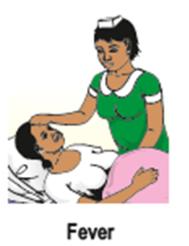

Educate mothers on the signs of maternal and newborn postnatal complications, and importance of delivering at a health facility, and attending regular postnatal visits:
Signs of maternal complications:
Vaginal bleeding (heavy or sudden increase)
Breathing difficulty
Fever
Severe abdominal pain
Severe headache and/or blurred vision
Convulsions/loss of consciousness
Foul smelling discharge of vagina
Painful and tender wound
Pain in calf with or without swelling
Breast that are red hot and feel painful
Abnormal behaviour/threats may harm herself or her baby; has hallucinations